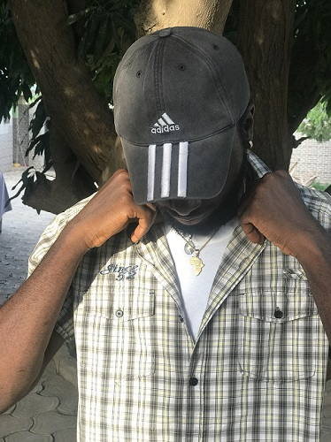

Slack Profile
Nelly Ghato
Ulokonelson20@gmail.com

My Goals
During my coding internship with HNG, my primary goals are to master foundational programming skills, become adept with version control systems like Git, and gain proficiency in key programming languages relevant to my team's tech stack. I aim to make meaningful contributions to real projects, writing clean, efficient, and maintainable code while honing my problem-solving and debugging skills. Additionally, I plan to build strong communication and teamwork abilities, incorporating feedback from experienced developers to improve continuously. Looking ahead to an ambitious 2-year plan, I aspire to become a proficient full-stack developer, capable of working on both front-end and back-end technologies. This plan includes learning multiple programming languages and frameworks, contributing to open-source projects, and obtaining certifications in cloud computing or cybersecurity. I also aim to lead a small project or team, participate in hackathons, and continuously refine my project management and leadership skills. This journey will position me as a well-rounded, highly skilled developer ready to take on significant responsibilities in the tech industry.